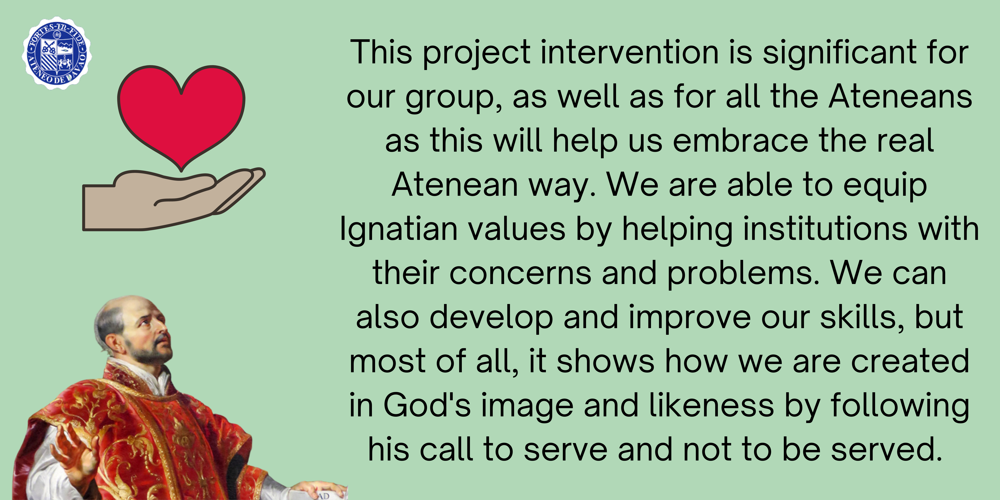
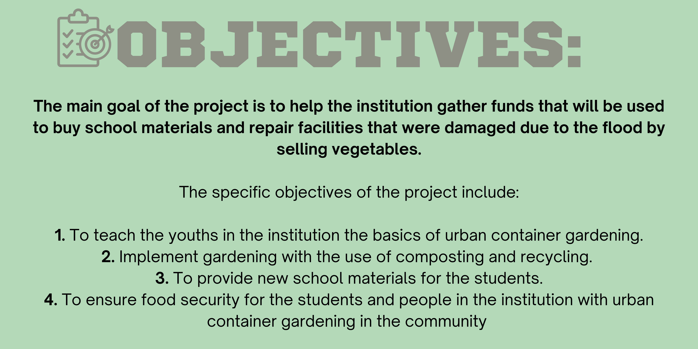
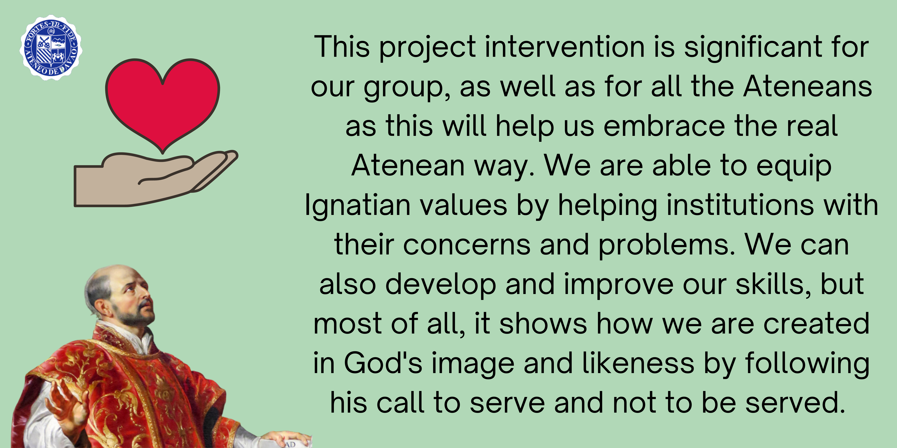
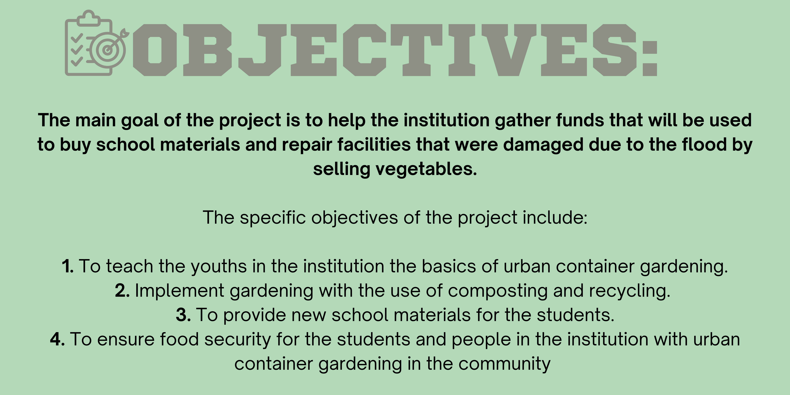
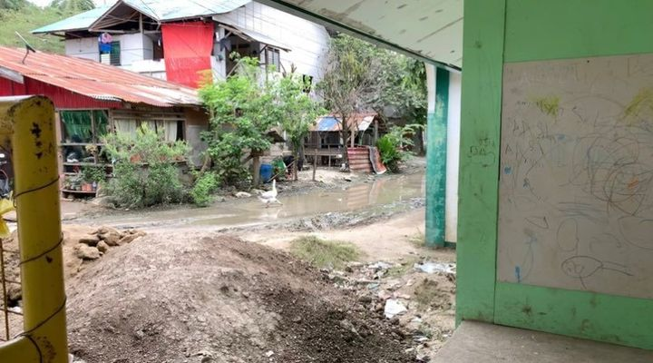
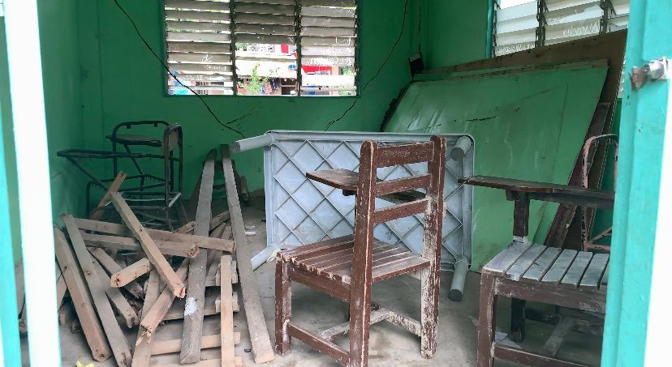

The Madrasah institution, commonly known as Sanggilangan is located at Ma-a Davao City which is a flood-prone area.
Due to this, the community often experiences heavy flooding that affected the conditions of their school resources and materials.

The institution also deals with a lack of funds now
which hinders them from providing more educational materials
for the students such as blackboards, chairs, notebooks, and Islamic books.
The Madrasah institution is experiencing problems that may stop them
from teaching students which is why it is very important that these pressing issues would be addressed.